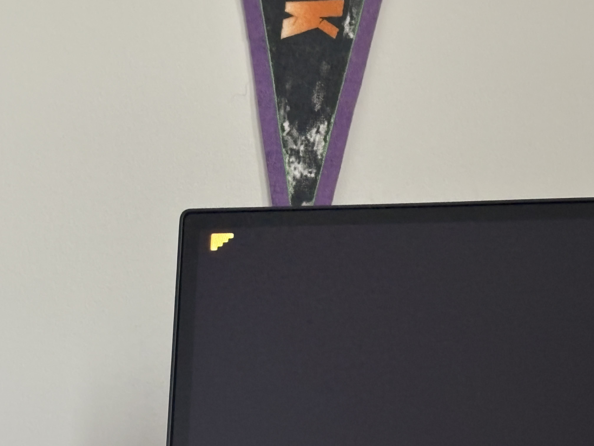
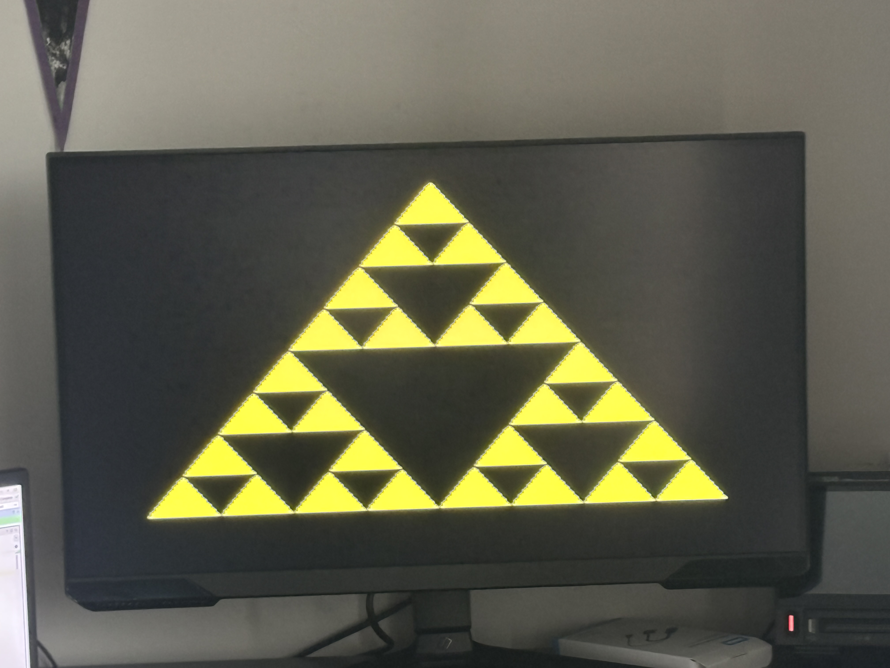

THE FOUNDATION
Building the RV32I processor
The single-cycle CPU combines an ALU, register file, instruction decoder, immediate generator, and branch logic. It supports arithmetic, logical operations, loads, stores, branches, and jumps, with separate instruction and data memories.
Programs are loaded as 32-bit hexadecimal instructions from a memory file. The processor runs the program and submits drawing commands to the rasterizer through ordinary memory writes.
- RV32I processor →Executes the program and writes triangle commands.
- Triangle rasterizer →Determines covered pixels and writes their colors.
- Framebuffer & VGAStores the image and sends it to the display.
CONNECTING SOFTWARE TO HARDWARE
Submitting triangle commands
The rasterizer's registers begin at 0x40000000. The CPU writes three
vertex positions and a color, then sets the start bit. Busy and done flags allow
software to coordinate sequential triangle submissions.
| Address | Register | Purpose |
|---|---|---|
0x40000000 | Control | Start a triangle or clear the done flag. |
0x40000004 | Status | Read busy and done flags. |
0x40000008through 0x4000001C | Vertices | Six registers for x and y coordinates. |
0x40000020 | Color | Set the triangle's 12-bit RGB color. |
TURNING VERTICES INTO PIXELS
Rasterizing a triangle
Triangle setup calculates a bounding box clipped to the framebuffer and three edge equations. It normalizes the edge direction for consistent coverage tests and skips zero-area triangles or triangles outside the display.
The rasterizer traverses the bounding box one pixel at a time. Edge values are updated by addition as it moves across each row, avoiding a fresh multiplication for every pixel. Pixels that pass all three edge tests are written to the framebuffer.
E(x, y) = Ax + By + C
Moving one pixel right adds A; moving one pixel down adds B.
A top-left edge rule determines which triangle owns a pixel exactly on a shared edge. Each triangle uses one flat color.
THE INITIAL HARDWARE TEST
Displaying the first triangle
The framebuffer stores 320 × 240 pixels with four bits each for red, green, and blue. VGA scan-out scales each stored pixel to a 2 × 2 block for 640 × 480 output.
Because framebuffer reads are synchronous, the display logic delays the active-video and synchronization signals to align them with pixel data. The small filled triangle below was the initial test of the drawing and display path on hardware.


CHECKING THE SYSTEM
Verifying the drawing path
The repository includes module testbenches and a CPU-to-rasterizer integration test. These check instruction behavior, triangle setup, pixel coverage, and framebuffer writes.
- CPU modules: ALU operations, register access, branches, immediates, and load/store formatting.
- Rasterizer modules: triangle setup, coverage rules, completion flags, and sequential submissions.
- System integration: a CPU program starts a triangle draw; the testbench checks completion, CPU fault signals, and the expected ten colored framebuffer pixels.
THE MAIN PROJECT DEMO
Drawing the Sierpiński triangle
The main demo renders a Sierpiński triangle through repeated triangle submissions. The processor supplies the geometry and drawing commands; the hardware rasterizer fills the triangles and the VGA path displays the result.
The pattern brings the full system together: instruction execution, memory-mapped control, consistent triangle edges, framebuffer storage, and display timing.

